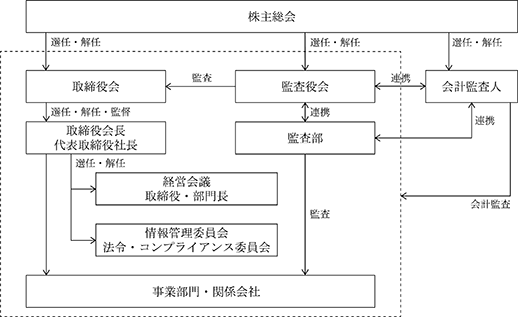

該当事項はありません。
該当事項はありません。
③ 【その他の新株予約権等の状況】
該当事項はありません。
該当事項はありません。
(注) 新株予約権（ストックオプション）の権利行使による増加であります。
（注） 自己株式186,546株は、「個人その他」に1,865単元、「単元未満株式の状況」に46株含まれております。
2024年１月31日現在
（注） 「単元未満株式」欄の普通株式のうち46株は自己株式であります。
該当事項はありません。
会社法第165条第３項の規定に読み替えて適用される同法第156条の規定に基づく取得
(注)当期間における取得自己株式数には、2024年４月１日から有価証券報告書提出日までの取得株式数は
含まれておりません。上記取得自己株式数は約定日ベースで記載しております。
該当事項はありません。
(注)当期間における保有自己株式数には、2024年４月１日から有価証券報告書提出日までの取得株式数は含まれ
ておりません。
当社は、株主に対する利益還元を重要な経営課題として認識しており、将来の事業展開と経営体質の強化のために内部留保を確保しつつ、安定的な配当を継続して実施していくこととしております。
当社は、期末配当の年１回の剰余金の配当を行うことを基本方針としており、剰余金の配当の決定機関は、株主総会であります。なお、当社は、毎年７月31日を基準として、取締役会の決議をもって、会社法第454条第５項に規定する中間配当を行うことができる旨を定款に定めております。
当期につきましてはこの基本方針に基づき、期末配当を１株当たり８円とさせていただく予定であります。なお、この場合の配当総額は100,398千円となります。
内部留保資金につきましては、主として人材確保、システム研究開発、サーバー等のシステム設備投資及び有力企業との提携を行うための投融資に充当する方針であります。
（注）基準日が当事業年度に属する剰余金の配当は、以下のとおりであります。
企業を取り巻く経営環境が大きく変化するなか、その変化に迅速に対応する経営体制の確立、並びに経営の健全性、透明性の確立は、コーポレート・ガバナンスの充実には必要不可欠と認識しております。当社は、企業倫理とコンプライアンスの重要性を認識し、企業の社会的責任を全うすることを経営上の重要な課題の一つとして位置づけております。そのために、現在の株主総会、取締役会、監査役会、会計監査人など、法律上の機能制度を一層強化・改善・整備しながら、コーポレート・ガバナンスを充実させていきたいと考えております。また、迅速かつ正確な情報開示に努めるとともに、経営の透明性を高めてまいります。
当社は監査役会設置会社であります。監査役３名のうち２名が社外監査役であります。
(ⅱ)会社の機関の内容及び業務執行・監査役監査の仕組み
当社は健全な経営を推進するために、各事業部門に責任者として取締役を置き、各部門の実務を統括して経営の意思決定の迅速化と業務執行の責任の明確化を図っております。当社の取締役会は取締役５名、社外取締役１名で構成され、法定の決議事項に加えて、各事業部門の業務執行及び法令の遵守の状況について、毎月の取締役会にて適宜報告され監視されています。監査役会は、常勤監査役１名、社外監査役２名で取締役の業務を監督しております。取締役会の他、個別の事業戦略等について、部門長を含めて議論することが望ましいと判断される場合には、取締役、各部門長等で構成される経営会議を必要に応じて開催しております。
その他、コンプライアンス体制の強化と事業上のリスクに対応するため、情報管理委員会及び法令・コンプライアンス委員会を設置しております。
（注）１ 社外取締役は、前中匡史の１名です。
２ 社外監査役は、山田浩雅、森直樹の２名です。
３ 取締役会及び監査役会の構成員の氏名については、後記「役員の状況」のとおりです。
なお、各機関の議長は次のとおりです。
・取締役会：代表取締役社長 酒井敬
・監査役会：常勤監査役 籾木勲
・経営会議：代表取締役社長 酒井敬
・情報管理委員会及び法令・コンプライアンス委員会：代表取締役社長 酒井敬
(ⅲ)企業統治の体制を採用する理由
当社がこのような体制を採用している理由は、取締役会の意思決定及び業務執行に対し、監査役会による監査機能を設けることで、経営の健全性を確保するためであります。

当社は、経営の健全性・透明性・迅速性を通じて企業としての社会的責任を果たすため、以下のとおり実効性のある内部統制システムを整備しております。
１．取締役会は、法令等遵守(以下「コンプライアンス」という。)のための体制を含む内部統制システムの整備方針・計画について決定するとともに、定期的に状況報告を受けております。
２．監査役は、独立した立場から、内部統制システムの整備・運用状況を含め、取締役の職務の執行を監査いたします。
３．コンプライアンス全体を統括する総括責任者及びコンプライアンス担当の配置、コンプライアンスに関連する規程の作成及び整備、研修の実施等により、役員及び従業員等が、それぞれの立場でコンプライアンスを自らの問題としてとらえ業務運営にあたるよう指導いたします。
４．当社の事業に適用される法令等を識別し、その内容を関連部署に周知徹底することにより、法的要求事項を遵守する基盤を整備いたします。
５．相談・通報体制を設け、役員及び従業員等が、社内においてコンプライアンス違反行為が行われ、また行われようとしていることに気づいたときは、社内及び社外の相談窓口等に通報しなければならないと定め、会社は、通報内容を秘守し、通報者に対して、不利益な扱いを行わないものといたします。
b. 当企業集団の取締役の職務の執行に係る情報の保存及び管理に関する体制
当社は、法令・社内規程に基づき、文書等の保存を行います。また、情報の管理については、情報セキュリティに関するガイドライン、個人情報保護に関する基本方針、さらにコンプライアンス・プログラムの要求事項を、実施し、維持し、及び継続的に改善してまいります。
c. 当企業集団の損失の危険の管理に関する規程その他の体制
１．事業目的と関連した経営に重大な影響を及ぼすリスクをトータルに認識、評価する仕組みを整備するとともに、リスク管理に関連する規程を整備いたします。
２．リスク管理の実効性を確保するために、サーバインフラ部と管理部、及び監査部は連携してリスク状況の監視及びその運用を行うものとします。
３．経営に重大な影響を及ぼす不測事態が、発生し又は発生するおそれが生じた場合の体制を事前に整備し、有事の対応を迅速に行うとともに、再発防止策を講じます。
d. 当企業集団の取締役の職務の執行が効率的に行われることを確保するための体制
１．取締役会は定期的に開催し、重要事項の決定及び各取締役の業務執行状況の監督等を行います。
２．取締役会への付議議案につきましては、取締役会における審議が十分行われるよう付議される議題に関する資料につきましては事前に全役員に配布され、各取締役会に先立ち十分な準備ができる体制をとるものとしております。
３．日常の職務の執行に際しては、組織規程等に基づき権限の委譲が行われ、各レベルの責任者が効率的に業務を遂行できる体制をとるものとしております。
e. 当社及び子会社からなる企業集団における業務の適正を確保するための体制
１．子会社の代表取締役は、当社の取締役会にて、事業内容の定期的な報告と重要案件について協議を行っております。
f. 監査役がその補助すべき使用人を置くことを求めた場合における当該使用人に関する体制並びにその使用人の取締役からの独立性及び当該使用人に対する指示の実効性の確保に関する事項
１．監査役は必要ある場合、業務補助のための監査役スタッフを置くことができるものとし、その人事については、監査役会の同意を必要とし、監査スタッフは業務執行に係る役職を兼務しないものとします。
２．監査役スタッフは、監査役より監査業務に必要な命令を受けた場合は、その命令に関して取締役、使用人の指揮命令を受けないものとします。
g. 当企業集団の取締役及び使用人が監査役に報告するための体制その他の監査役への報告に対する体制
１．当企業集団の取締役及び使用人は、監査役に対して、会社経営及び事業運営上の重要事項並びに職務の執行の状況及び結果について監査役に報告いたします。
２．当企業集団の取締役及び使用人は、当企業集団における重大な法令違反、コンプライアンスにおける重大な事実を発見した場合及び報告を受けた場合、遅滞なく監査役に報告いたします。
３．当社グループの内部通報システムによる通報状況は、定期的又は監査役の求めに応じて報告いたします。
４．会社は、監査役へ報告を行った当社グループの役職員に対し、当該報告を行ったことを理由として不利益な取り扱いを行うことを禁止し、その旨を当社グループの役職員に周知徹底いたします。
h. その他監査役の監査が実効的に行われることを確保するための体制
１．監査役の職務の効率的な遂行のため、取締役及び使用人は、会社経営及び事業運営上の重要事項並びに職務の執行の状況及び結果について監査役に報告いたします。
２．取締役は、会社に著しい損害を及ぼすおそれのある事実があることを発見したときは、法令に従い直ちに報告いたします。
３．監査役が職務執行について生じる費用の前払い又は償還等の請求をしたときは、当該監査役の職務執行に必要でないと認められた場合を除き、速やかに当該費用または債務を処理いたします。
i. 当企業集団のその他監査役の監査が実効的に行われることを確保するための体制
１．取締役と監査役は、相互の意思疎通を図るため、定期的な会合を行います。
２．取締役は、監査役の職務の適切な遂行のため、情報の収集交換が円滑に行えるよう協力いたします。
j. 当企業集団の反社会的勢力排除に向けた基本的な考え方とその整備状況
１．反社会的勢力及び団体に対しては毅然とした態度を貫き、いかなる取引も行ってはならない旨を、役員、社員へ周知徹底しております。
２．平素より反社会的勢力及び団体に関する情報収集を図り、万一不当要求等の事態が発生した場合には警察や顧問弁護士と迅速に連絡を取り、速やかに対処できる体制を構築しています。
k. 当企業集団の財務報告の信頼性を確保するための体制
当社及び当社グループの財務報告の信頼性を確保するための内部統制システムの構築及び運用を整備・推進いたします。
当社と社外取締役及び社外監査役は、会社法第427条第１項の規定に基づき、同法第423条第１項の損害賠償責任を限定する契約を締結しております。当該契約に基づく損害賠償責任の限度額は、法令が定める額としております。なお、当該責任限定が認められるのは、当該社外取締役及び社外監査役が責任の原因となった職務の遂行について善意でかつ重大な過失がないときに限られます。
当社の取締役は30名以内とする旨を定款で定めております。
当社は、取締役の選任決議について、議決権を行使することができる株主の議決権の３分の１以上を有する株主が出席し、その議決権の過半数をもって行う旨、及びその決議は累積投票によらない旨定款に定めております。
当社は、会社法第309条第２項に定める株主総会の特別決議要件について、議決権を行使することができる株主の３分の１以上を有する株主が出席し、その議決権の３分の２以上をもって行う旨定款に定めております。これは、株主総会における特別決議の定足数を緩和することにより、株主総会の円滑な運営を行うことを目的とするものであります。
当社は、取締役会の決議をもって、会社法第165条第２項の規定に基づき自己株式の取得を行うことができる旨及び会社法第454条第５項の規定に基づき中間配当を行うことができる旨定款に定めております。
これは、自己株式の取得及び中間配当を、経営環境の変化に対応してより機動的に実施できるようにするためであります。
個人情報の保護ならびに企業情報の不正流失を防止するために、システム統括本部にて各種情報の取り扱いをモニタリングし、必要な防止策を講じています。また、グループ会社における管理方式の見直しを行い、当社グループ全体での内部統制の統一に取り組んでいます。さらに、グループ全体の経営の活動や報告を監視し、企業活動の法令違反の有無と潜在的なリスクを検討するため、当社グループの経営者が参加して行われるグループ経営会議を毎月実施しています。
男性
(注) １ 取締役 前中匡史は社外取締役であります。
２ 監査役 山田浩雅及び森直樹は社外監査役であります。
３ 任期は、2024年１月期に係る定時株主総会終結の時から2026年１月期に係る定時株主総会終結の時までであります。
４ 任期は、2022年１月期に係る定時株主総会終結の時から2026年１月期に係る定時株主総会終結の時までであります。
５ 任期は、2023年１月期に係る定時株主総会終結の時から2026年１月期に係る定時株主総会終結の時までであります。
② 社外役員の状況
当社の社外取締役は１名、社外監査役は２名であります。
当社の企業統治において、社外取締役及び社外監査役の専門的かつ客観的な視点や、意見具申は有用であると考えております。社外取締役及び社外監査役の独立性に関する基準や方針は明確には定めておりませんが、当社との人的関係、資本的関係または取引関係などの特別な利害関係がなく、高い見識に基づき当社の経営監視ができる人材を求める方針としております。
当社と社外取締役及び社外監査役との間に特別の利害関係はありません。
社外取締役前中匡史氏は、株式会社オージス総研の取締役執行役員を兼任しており、同社は当社株式数の10％を保有する大株主であり、当社との間で資本業務提携を締結しておりますが、当社との間に人的関係、資本的関係及び重要な取引関係その他の利害関係はありません。
社外監査役山田浩雅氏は、株式会社リアルビジョンの代表取締役を兼任しておりますが、当社との間に人的関係、資本的関係及び重要な取引関係その他の利害関係はありません。
社外監査役森直樹氏は、株式会社テラプローブの社外取締役及びトパ－ズ・リ－ジョナル・パ－トナ－ズ株式会社の代表取締役を兼任しておりますが、当社との間に人的関係、資本的関係及び重要な取引関係その他の利害関係はありません。
社外取締役前中匡史氏は、東京証券取引所の定めに基づき同取引所へ独立役員として届け出る予定となっております。
社外取締役が企業統治において果たす機能及び役割は、経営者としての豊富な知識及び経験等に基づき、より広い視野を持って会社の重要な意思決定に参加し、その決定プロセスにおいて客観的評価を行う等的確な分析に基づく発言を行い、経営陣に対する実効的な監視監督を担っております。
社外取締役の選任状況に関する考え方については、外部からの客観的、中立の経営監視の機能が十分に機能を発揮し、当社の企業統治の有効性を高める機能及び役割を担っていると考えております。
社外監査役が企業統治において果たす機能及び役割は、高い独立性及び専門的な見地から、客観的かつ適切な監視、監督を行うことにより、当社の企業統治の有効性を高める機能及び役割を担っていると考えております。経営の意思決定機能と、取締役及び執行役員による業務執行を管理監督する機能を持つ取締役会に対し、監査役３名中２名を社外監査役とすることで経営への監視機能を強化しております。
社外監査役の選任状況に関する考え方については、当社の現在の監査役は監査機能を十分に発揮し、客観的な立場で適切に監査しており、当社の企業統治の有効性を高める機能及び役割を担っていると考えております。
当社は、社外監査役が円滑に経営に対する監査と監視を実行できるよう、内部統制部門と連携のもと、必要に応じて資料の提供や事情説明を行う体制をとっております。社外監査役と常勤監査役とは、監査役会において適宜、報告及び意見交換を行っており、取締役会にて重要な意思決定のプロセス等を確認し、意見を述べております。また、会計監査人との相互の連携を図るために、適宜、情報交換及び意見交換をしております。
(3) 【監査の状況】
監査役は３名で、うち２名は社外監査役であります。各監査役は、各監査役間で定めた監査方針、監査計画等に従い、取締役会その他重要な会議への出席、各取締役や内部監査等からの執行状況聴取を実施しております。
当事業年度において当社は監査役会を14回開催しており、個々の監査役の出席状況については次のとおりであります。
(注)森直樹氏は、2023年４月27日開催の定時株主総会において新たに選任され就任しており、当該株主総会後に
監査役会は10回開催されております。
監査役会における主な検討事項は、監査方針や監査計画の策定、監査結果と監査報告書の作成、会計監査人の評価と選解任及び監査報酬の同意に係る事項、当社グループのコーポレート・ガバナンスや内部統制システムの整備・運用状況、監査上の主要な検討事項(KAM：Key Audit Matters)の妥当性等です。
また、常勤監査役の活動として、取締役会や経営会議等の重要会議への出席、重要な決裁書類や各種契約書類等の閲覧、業務執行部門への聴取等を通じて会社状況を把握することで経営の健全性を監査し、社外監査役への情報共有を行うことで監査機能の充実を図っております。
監査役は、代表取締役との意見交換の実施や、和泉監査法人と定期的な会合により、監査方針、監査計画等の確認を行い、会計監査の実施状況について意見交換、情報交換を行うことで、監査の実効性及び効率性の向上につとめております。
監査部について、年間内部監査計画を策定し、各部門及び関係会社の業務執行状況について、内部統制にかかる監査、コンプライアンスについて監査します。監査部は、１名で構成されております。内部監査の結果は、代表取締役社長、各担当役員、取締役会に報告されるとともに、監査役会にも報告され、監査役監査との連携を図っています。
a. 監査法人の名称
和泉監査法人
b. 継続監査期間
2023年１月期以降
代表社員 業務執行社員：公認会計士 田中 量
代表社員 業務執行社員：公認会計士 佐藤 義仁
業務執行社員：公認会計士 山下 聡
当社の会計監査業務にかかる補助者は、公認会計士４名、その他２名であります。
e. 監査法人の選定方針と理由
当社の監査役会は会計監査人の選定基準を定め、監査法人の品質管理体制、独立性、専門性、事業内容についての理解及び監査報酬の水準等を総合的に勘案した上で選定しております。監査役会は、会計監査人が会社法第340条第１項各号のいずれかに該当すると認められる場合には、監査役全員の同意に基づき会計監査人を解任する方針であります。
上記のほか、会計監査人が適正に監査を遂行することが困難と認められる場合及びその他会計監査人の変更が妥当と判断される場合には、取締役会は監査役会の決定に基づき会計監査人の解任又は不再任に係る議案を株主総会に提出いたします。
f. 監査役及び監査役会による監査法人の評価
当社の監査役会は、当事業年度における会計監査人の監査方法及び結果を相当であると評価しております。
該当事項はありません。
c. その他重要な監査証明業務に基づく報酬の内容
該当事項はありません。
当社は、監査公認会計士等に対する監査報酬の決定方針を特に定めておりませんが、監査報酬の適正性について、監査日数、当社の規模及び業務の性質等を考慮し、毎事業年度検討しております。
e. 監査役会が会計監査人の報酬等に同意した理由
取締役会が提案した会計監査人に対する報酬等に対して、当社の監査役会が会社法第399条第１項の同意をした理由は、会計監査人の監査計画の内容、会計監査の職務遂行状況及び報酬見積りの算出根拠などが適切であるかについて必要な検証を行ったうえで、会計監査人の報酬等の額について適切であると判断したためであります。
(4) 【役員の報酬等】
取締役の報酬限度額は、2000年３月28日開催の第６期定時株主総会において、年額150,000千円以内（ただし、使用人分給与は含まない。）と決議いただいております。当該定時株主総会終結時点の取締役の員数は３名です。
当社は役員報酬等の額等の決定方針の決定に関与する委員会等は設置しておりませんが、「取締役報酬に関する決定方針規程」を設け、当社グル－プの連結経常利益と連動するようにし、各役員の個別の報酬額は、株主総会決議の範囲内で職務責任や業績等を考慮して、取締役会の決議により決定しております。
当事業年度の役員報酬等の額の決定過程における取締役会の活動内容につきましては、当社の業績向上及び企業価値の増大への貢献度、またその役位に応じて報酬の額を算出し、取締役会での協議を経た後、各取締役の個別の報酬等の額を決定しております。
監査役の報酬限度額は、2000年３月28日開催の第６期定時株主総会において、年額18,000千円以内と決議いただいております。当該定時株主総会終結時点の監査役の員数は１名です。監査役の報酬については、株主総会で決議された報酬限度額の範囲内で、監査役の協議により各監査役の報酬を決定しております。
取締役会は、当事業年度に係る取締役の個人別の報酬等について、報酬等の内容の決定方法及び決定された報酬等の内容が「取締役報酬に関する決定方針規程」と整合していることを確認しており、当該規程に沿うものであると判断しております。
③ 使用人兼務役員の使用人給与のうち、重要なもの
該当事項はありません。
(5) 【株式の保有状況】
当社は、保有目的が純投資目的である投資株式と純投資目的以外の目的である投資株式の区分について、株式の価値の変動又は株式にかかる配当によって利益を受けることを目的として保有する株式を純投資目的である投資の株式とし、それ以外を純投資目的以外の目的である投資株式としております。
ａ．保有方針及び保有の合理性を検証する方法並びに個別銘柄の保有の適否に関する取締役会等における検証の内容
当社は、中長期的な企業価値の向上を実現する観点から、取引先との良好な関係を構築し、事業の円滑な推進を図るために必要と判断する企業の株式を保有しております。中長期的な経済合理性や将来の見通しを検証したうえで保有の合理性について当社取締役会にて審議を行っております。
（当事業年度において株式数が増加した銘柄）
該当事項はありません。
該当事項はありません。
特定投資株式
(注) 定量的な保有効果については記載が困難であります。保有の合理性は、保有目的、経済合理性、取引状況等により検証しております
みなし保有株式
該当事項はありません。
該当事項はありません。
該当事項はありません。
該当事項はありません。